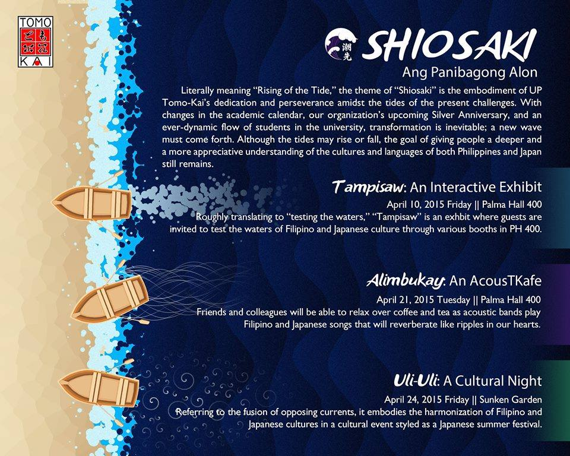

For UP Tomo-Kai
I have created posters and publicity materials for the organization 'UP Tomo-Kai' as part of its publicity committee during my time in college. The following posters displayed here are my main contributions.


Shiosaki

Facebook link